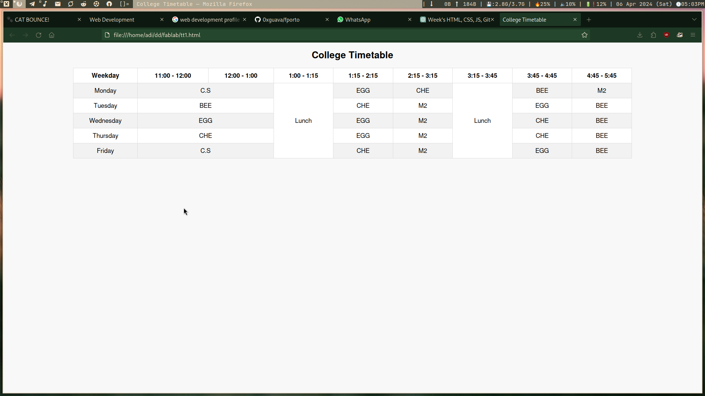
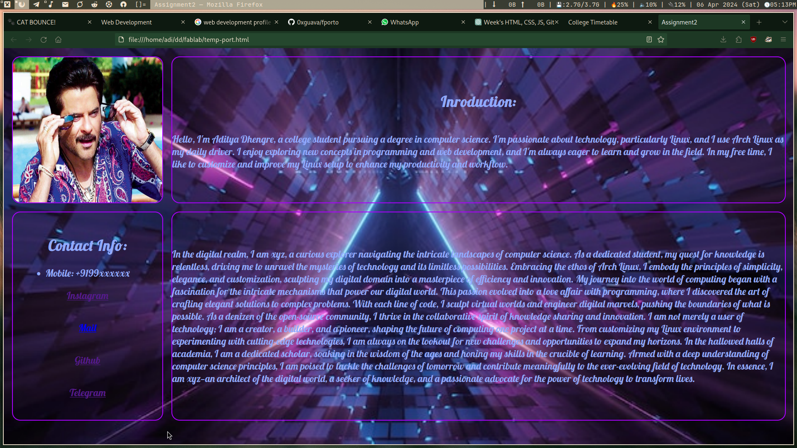
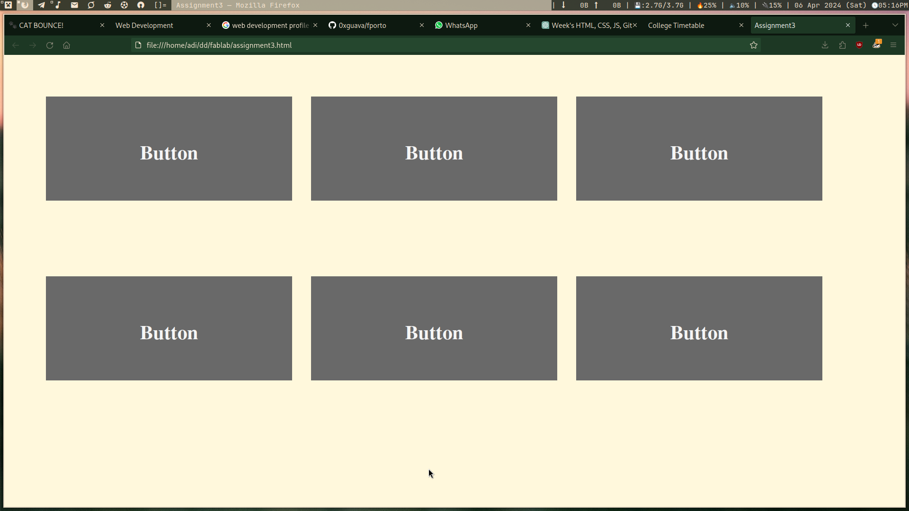
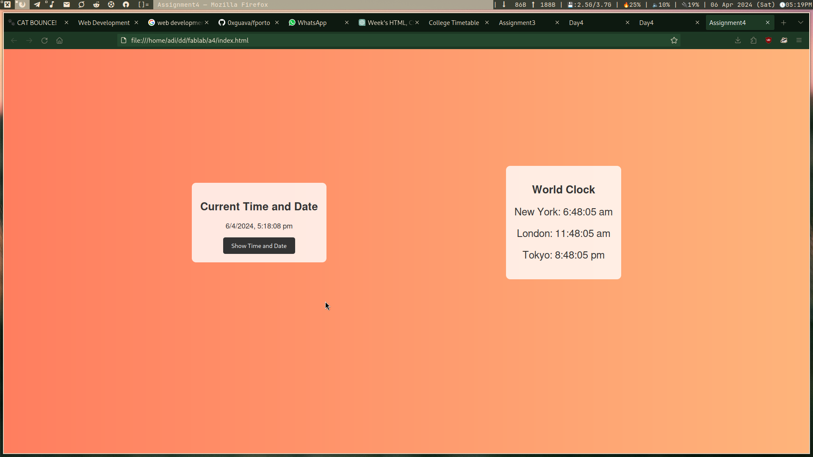
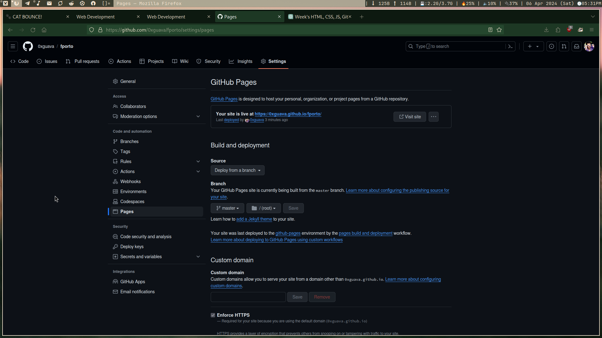

Assignment Info
- Title: Web Development
- Module no.: 01
- Start date:01 April 2024
- Assignment date:07 April 2024
A Journey into Web Development
In the past week, I embarked on an exciting journey into the realm of web development, exploring various technologies and tools that form the backbone of the modern web. It was a week filled with learning, creativity, and hands-on experience that helped me gain a deeper understanding of HTML, CSS, JavaScript, Git, and GitHub.
Day 1: Crafting the College Timetable
The journey into web development commenced with an engaging task: crafting a college timetable using HTML and CSS. This task served as a foundational exercise, offering insights into the structural components of a basic webpage and showcasing the transformative capabilities of CSS in styling and organizing elements.
As I delved into this task, I not only learned about the technical aspects of HTML and CSS but also gained a deeper understanding of their significance in web development. I discovered how semantic HTML, with its emphasis on meaningful tags and attributes, plays a crucial role in enhancing the accessibility and readability of web content. I was able to create a well-structured timetable that not only looked visually appealing but also conveyed its content in a clear and understandable manner.
Moreover, this task provided me with valuable insights into CSS styling techniques, including the use of selectors, properties, and values to customize the appearance of elements. I experimented with different styles, such as colors, fonts, and spacing, to create a visually appealing layout for the timetable. I also learned about the importance of responsive design, ensuring that the timetable was accessible and user-friendly across different devices and screen sizes.
In conclusion, this task was more than just creating a timetable; it was a foundational step in my journey into web development. It equipped me with essential skills and knowledge that will serve as a solid foundation as I continue to explore and expand my expertise in this dynamic field.
Day 2: Building the Profile Page
Next, I worked on developing a static webpage for my profile. This task helped me apply my HTML and CSS skills to create a personalized webpage that showcased my skills and interests. I learned about CSS properties such as flexbox and grid that helped me create a responsive layout for my profile page.
I embarked on the next phase of my journey by crafting a static webpage dedicated to my profile. This task not only allowed me to further hone my HTML and CSS skills but also provided an opportunity to create a personalized space that reflected my skills and interests. As I delved deeper into this project, I explored various CSS properties such as flexbox and grid, which proved instrumental in crafting a responsive and visually appealing layout for my profile page.
One of the key aspects I incorporated into my profile page was the use of hover effects. By leveraging CSS hover selectors, I added interactive elements that responded dynamically to user actions. This not only enhanced the user experience but also added a touch of interactivity to my page, making it more engaging.
Additionally, I delved into CSS transitions, which allowed me to animate changes in properties such as color, size, and position. These subtle animations added a layer of polish to my profile page, making it feel more dynamic and modern.
Typography played a crucial role in shaping the visual identity of my profile page. I experimented with different fonts, sizes, and styles to create a harmonious and readable layout. By choosing the right fonts and applying them thoughtfully, I was able to convey a sense of professionalism and personality through my profile page.
Overall, this project was not just about creating a static webpage; it was a creative exploration that deepened my understanding of HTML and CSS. It taught me the importance of design principles and how they can be applied to create a cohesive and visually appealing web presence.
Day 3: Adding Animation to Buttons
I then moved on to creating a static webpage with six buttons, each featuring a different animation. This task introduced me to the world of CSS animations and transitions, allowing me to add interactive elements to my webpage. I experimented with various animation properties such as transform and transition to create visually appealing effects.
I progressed to the next stage by creating a dynamic static webpage featuring six buttons, each showcasing a unique animation. This task was my gateway into the realm of CSS animations and transitions, offering me a hands-on experience in incorporating interactive elements into my webpage. Through this project, I delved into various animation properties, such as transform and transition, to craft visually captivating effects that enhanced the overall user experience.
Each button on the webpage was meticulously designed to exhibit a distinct animation upon interaction. By utilizing CSS :hover pseudo-class, I ensured that each button responded dynamically to user actions, adding a layer of interactivity that made the webpage more engaging and immersive.
Furthermore, I explored different transition effects for each button, employing CSS transition property to animate changes in properties such as color, size, and position. These transitions not only added a touch of elegance to the webpage but also provided visual cues that guided users through the interactive elements.
In terms of creativity, I pushed the boundaries of conventional design by incorporating unique visual elements and layouts. From vibrant color schemes to innovative button placements, I aimed to create a webpage that not only showcased my technical skills but also captivated the audience with its creativity and ingenuity.
Overall, this project was a testament to the power of CSS animations and transitions in creating immersive and interactive web experiences. It challenged me to think creatively and experiment with different design elements, ultimately expanding my skill set and understanding of web development.
Day 4: Introduction to JavaScript

On the fourth day, I delved into the basics of JavaScript and learned how to use it with HTML. I explored concepts such as variables, data types, and functions, and applied them to create interactive elements on my webpages. JavaScript proved to be a powerful tool for adding dynamic content and interactivity to my projects.
On the fourth day of my journey, I delved into the foundational concepts of JavaScript, exploring its syntax and functionality in tandem with HTML. This marked the beginning of a new chapter, where I gained insights into essential concepts such as variables, data types, and functions. These three magical words of JavaScript - let, var, and const - became instrumental in my understanding of how to declare and manipulate data in my scripts.
One of the key highlights of this learning phase was exploring the Date and Time functions of JavaScript and integrating them seamlessly with HTML and CSS. This allowed me to create dynamic and interactive elements on my webpages, such as a clock and a world clock. By leveraging JavaScript's Date object and methods, I was able to display real-time date and time information, enhancing the functionality and user experience of my projects.
Furthermore, I delved into the concept of functions in JavaScript, learning how to define and call functions to perform specific tasks. This foundational knowledge opened up a world of possibilities, enabling me to create reusable code snippets that added interactivity and dynamism to my webpages.
Overall, delving into JavaScript was a transformative experience, as it introduced me to the power of dynamic scripting and its ability to add a new dimension of interactivity to my projects. It laid a solid foundation for my future explorations in JavaScript and its advanced concepts.
Day 5: Git and GitHub
I dedicated the fifth day to learning about Git and GitHub, essential tools for version control and collaboration in web development. I learned how to create repositories, commit changes, and push them to GitHub. I also explored branching and merging, which are crucial concepts for managing a project's codebase.
- Initialize Git within directory: Use the following command to initialize a new Git repository in your project directory.
- Configure Git: Configure your Git username and email address using the following commands. This is important for tracking your changes.
- Add Files: Add the files you want to track to the staging area using the following command.
- Commit Changes: Commit your changes to the local repository with a descriptive message.
- Connect to Remote Repository: If you haven't already, connect your local repository to github repository using the following command.
- Push Changes: Push your committed changes to the remote repository.
- Link to my Github profile: 0xguava
git initgit config --global user.name "0xguava"
git config --global user.email "demo.lappy@protonmail.com"git add .git commit -m "initial commit"git remote add origin git@github.com:0xguava/fporto.gitgit push origin masterDay 6: Developing the Portfolio Site
With a solid foundation in place, I began developing my own portfolio site. I applied my knowledge of HTML, CSS, and JavaScript to create a professional-looking site that showcased my projects and skills. I focused on creating a responsive design that looked great on both desktop and mobile devices.
Day 7: Hosting on GitHub Pages
- Step 1: Go to the setting tab within your github repository, which contains your portfolio site code.
- Step 2: Navigate to the pages tab under code and automation section.
- Step 3: In there, under branch section select you repository branch(in my case, master)
- Step 4: Now, simply click on save. Within 1-2 minutes your site will be live. *as shown in picture*
The final day of the week was dedicated to hosting my portfolio site on GitHub Pages. I learned how to create a gh-pages branch in my repository and push my site's files to this branch. Within minutes, my site was live on the web, accessible to anyone with an internet connection.
Conclusion
In conclusion, the past week has been incredibly rewarding, filled with learning and growth. I have gained a deeper understanding of web development technologies and tools, and I am excited to continue my journey and explore more advanced concepts in the weeks to come.